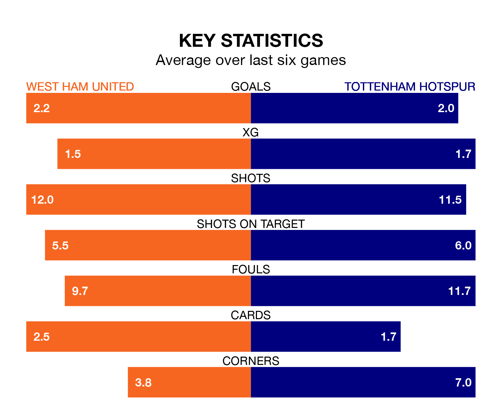

Tottenham Hotspur travel to West Ham United on late Tuesday in the Premier League.
The visitors come into the game on the back of a win in their last match, having beaten Luton Town 2-1 at home, with goals from Heung-Min Son and Issa Kabore.
The Hammers, meanwhile, lost their last match, 4-3 against Newcastle United, with their goals scored by Jarrod Bowen, Michail Antonio and Mohammed Kudus.
With 61 goals in 29 games so far this season, Spurs are scoring more than average in the league with 2.1 goals per game. And they are conceding fewer than average, letting in 43 goals at a rate of 1.5 per game.
West Ham, meanwhile, are average scorers, with 1.6 goals per game. They have conceded 1.8 goals per game.
In the last 10 years, West Ham and Spurs have played each other on 24 occasions. West Ham won nine of them, Spurs 11, and they drew four times.
On average, the Hammers scored 1.4 goals and Spurs 1.7 in those matches.
Their last meeting was on December 7, when West Ham won 2-1 away.
In Son, Tottenham have one of the league's sharpest shooters so far this season. He has notched 15 goals in 26 appearances, to sit fourth in the scoring charts.
United's top scorer, with 15 goals in 29 games, is Bowen.
The visitors are fifth in the table after 29 games, of which they have won 17 and drawn five, earning 56 points.
The Hammers are two places behind Spurs in seventh, with 12 wins and eight draws putting them on 44 points.
The home side are in mixed form in the Premier League, with two wins and two draws from their last six games.
With four wins and two losses over that period, Spurs's form is better – they have taken 12 points from 18, compared to West Ham's eight.
Tuesday's match will be refereed by John Brooks, who has taken charge of 17 Premier League games so far this season, issuing four red cards and booking 76 players. He has awarded four penalties.
The last West Ham game Brooks refereed was a 3-1 home win against Chelsea on August 20. His last Spurs match was their 3-1 win at home against Crystal Palace on March 2.
Updated: 10:31 (UTC), 31/03/24